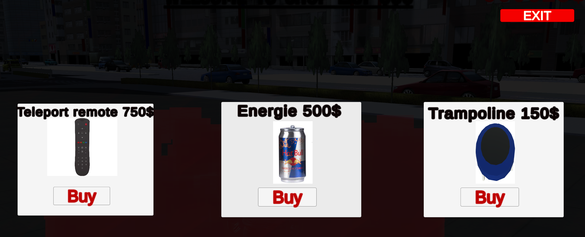

This project was focused on the teamwork aspect. In this project, i learned how to use a combination of tools that helps with teamwork. This project taught me a lot about good practices while working with a team, but also how to coordinate our work together and communicating efficiently our concerns to each other.
We worked using the Scrum agile developpement method for the entirety of this project. We had weekly meeting, task backlog for each sprint, sprint review at the end of each one of them, while using Trello to keep up with the tasks log and Github for version control
The player interact with the delivery terminal to grab a route, he can hold up to 3 deliveries at any given time. When he accept the route, the player will have to complete a minigame where the goal is to stack as many parcels as possible
The more parcels the player achieve to stack during the minigame, the higher the rewards will be for completing his route. Once the minigame is completed, a 5 minute timer starts, the player need to complete all of his deliveries before the timer runs out.
The player can buy items at the shop such as a trampoline or a energy drink to help him make more the difficults deliveries in time.
